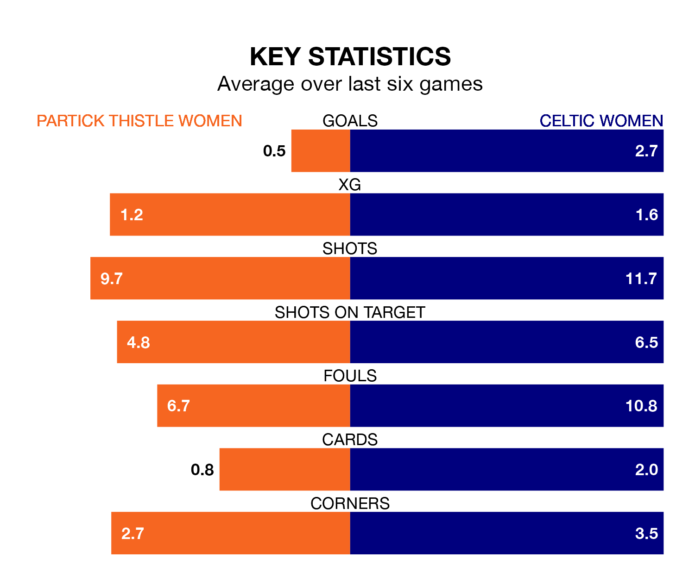

Celtic Women come to Petershill Park to play Partick Thistle Women on late Sunday in excellent form, having collected 16 points from their last six games.
The visitors have won five and drawn one of their last six fixtures, while Thistle have a win and two draws.
With 106 goals in 24 games so far this season, Celtic are the league's highest scorers with 4.4 goals per game. And they are conceding fewer than average, letting in 15 goals at a rate of 0.6 per game.
Partick Thistle, meanwhile, are below average scorers, with 1.5 goals per game, compared to a league average of 2.1. They have conceded 1.7 goals per game.
In Amy Gallagher, the visitors have the league's most on-form striker so far this season. She has notched 22 goals in 23 appearances.
Her goal rate of one every 86 minutes is much quicker than that of Cara Henderson, Thistle's top scorer with a goal every 191 minutes, and a total of 10 goals in 24 games.
Celtic are second in the table after 24 games, of which they have won 20 and drawn two, earning 62 points.
The home team are four places behind Celtic in sixth, with 12 wins and two draws putting them on 38 points.
In the last 10 years, Partick Thistle and Celtic have played each other on 11 occasions. Celtic won all of them.
On average, Thistle scored 0.2 goals and Celtic 3.9 in those matches.
Their last meeting was on March 3, when Celtic won 6-1 at home.
Partick Thistle's last match was on March 31, a 3-0 loss against Hearts Women.
Celtic beat Glasgow City Women 2-1 last time out, also on March 31, with Caitlin Hayes and Natasha Jane Flint on the scoresheet.
Updated: 10:01 (UTC), 12/04/24